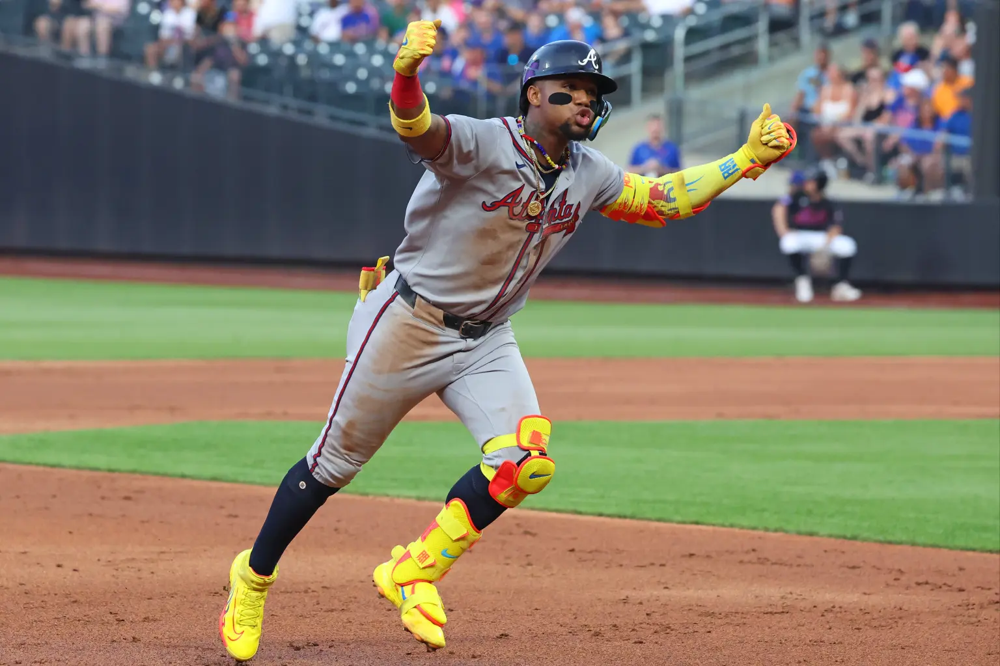

RONALD ACUÑA JR. 13 · ATLANTA BRAVES
Acuña’s yellow kit and classic 13 chain. Product names use the closest documented match; retail versions and colors may differ.
The illustration is an AI-generated reconstruction based on the supplied photograph.

Inspired by Human Atlas. Unofficial fan project.